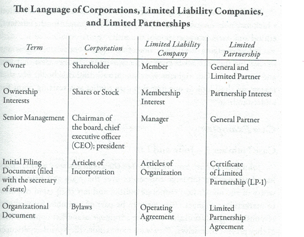
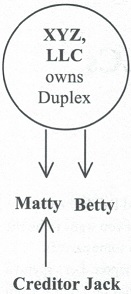
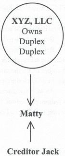
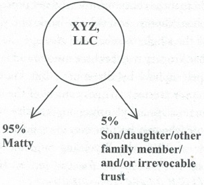
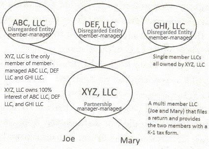

One of the primary advantages of an LLC is that no one has personal liability, as in a Limited Partnership. The general partner of a Limited Partnership is personally liable for the debts of the partnership. The way to minimize this is to form a separate Corporation or LLC to serve as the general partner, thus encapsulating personal liability within a protected entity.
As has been mentioned throughout, one of the most significant benefits of the LLC, and a key reason for its existence, is the fact that the IRS recognizes it as a pass-through tax entity. All of the profits and losses of the business flow, through the LLC without tax. They flow through to the business, real estate or asset holding owners tax return and are dealt with at the individual level.
Again, a C corporation does not offer such a feature In a C corporation, the profits are taxed at the corporate level and then taxed again when a dividend is paid to the shareholder - thus the issue of double taxation.
You can form an LLC and be the sole member. You can enjoy the benefits of limited liability and flow-through taxation and not answer to anyone (except, of course, possibly your spouse and the IRS). And, because the IRS views a single-member LLC as a "disregarded entity" for tax purposes, you may not even need to file an LLC tax return. Instead, the LLC's profits and losses can flow directly onto your personal tax return, be it Schedule C, E, or F (depending on the type of trade or business carried on by your single-member LLC). And, a single-member can also include a husband and wife as joint tenants, or a living trust. Better yet, while the IRS views a single-member LLC as a disregarded entity (thus obviating the need for an LLC tax return), the law still views a single-member LLC as being entitled to limited liability protection.
But for every benefit comes a drawback. Several U.S. states now deny asset protection to single member LLCs. In varying degrees, California, Colorado, Florida, Kansas and Montana, among other states, do not support single member LLCs. Additional states may follow suit. (Know that Nevada and Wyoming do protect the single member LLC.) But again, when weighing the advantage of no LLC tax return, you’ve got to weigh it against a possible loss of entity protection. Many people may choose to have a two or more member LLC just to be safe, and to file an LLC tax return as necessary.
LLCs offer two very flexible and workable means of management. First, they can be managed by all of their members, which is known as member-managed. Or they can be managed by just one or some of the members or by an outside nonmember, which is called manager-managed.
It is very easy to designate whether the LLC is to be member or manager-managed. In some states, the Articles of Organization filed with the state must set out how the LLC is to be managed. In other jurisdictions, management is detailed in the Operating Agreement. If the members of an LLC want to change from manager-managed to member-managed, or vice versa, such a change can be accomplished by a vote of the members.
In most cases, the LLC will be managed by the members. In a small, growing company, each owner will want to have an active say in how the business is operated. Member management is a direct and simple way to accomplish this.
It should be noted that in a Corporation there are several layers of management supervision. The officers - president, secretary, treasurer and vice presidents - handle the day-to-day, affairs. They are appointed by the board of directors, which oversees the larger, strategic issues of the Corporation. The directors are elected by the shareholders. By contrast, in a member-managed LLC the members are the shareholders, directors and officers all at once.
In a manager-managed LLC ownership is different from management. You can have a bunch of owners but you only have one or two managers. The managers control everything, owners don't really control anything.
In some cases, such as the following, manager management is appropriate for conducting the business of the LLC:
Because manager-managed offers more flexibility we generally recommend this format. The members can all be managers in a manager-managed scenario. If the management structure changes you don’t have to ament the Articles, as you would if you went from member-managed to manager-managed.
One of the remarkable features of an LLC is that members may divide the profits and losses in a flexible manner. This is a significant departure from the corporate regime whereby. dividends and distributions, respectively, are allocated according to percentage ownership.
As an example, Red, Blue, and Tiny each own one third of a business. Red puts in all of the money, Blue does all the work and Tiny doesn't do much of anything. The business loses $90,000 the first year and makes $120,000 the second year. In an S corporation, the three would each be allocated a loss of $30,000 the first year and a gain of $40,000 in the second year. Red and Blue are understandably not too keen on this distribution scheme. Tiny did nothing.
However, with an LLC, Red could be allocated all of the losses in the first year and Blue could be allocated a large percentage of the gain in the second year. As long as certain special tax split rules are met and each individual pays the taxes on the gains he or she receives, the IRS is amenable to this flexible approach. And in terms of business world reality, where some people put up the money, some do most of the work and a few do absolutely nothing at all, the flexibility of LLC distributions can make all the difference between moving forward and getting bogged down in squabbling over who is doing what.
Managers serve for an indefinite term in most LLCs. Unless provided otherwise in the Operating Agreement, the managers serve until the members take a vote to remove them.
It should be noted that unlike certain areas of corporate law, such as directors’ terms and meetings, which have a defined structure and procedure, the law of LLCs is much less formal. If you want to have terms for your managers, you can put them into your Operating Agreement. If you'd rather not bother, so be it. That’s your choice. If you run into a problem with your managers, state law lets you hold a vote of all the members, and the majority wins.
In a manager-managed LLC the members retain certain voting rights under most state statutes (In a member managed LLC this isn't much of an issue since all members vote on everything anyway). Besides the right to remove and replace managers, non-managing members also have the right to:
The number of votes each member and/or manager is allowed to exercise should be clearly set out in the Operating Agreement. If your Operating Agreement is silent on this issue, your state’s Statute will apply by default. Typically, state laws allocate voting power according to each member’s ownership interest as represented by his or her capital contribution. Some states’ default rules apply a per capita standard of one vote per member. Neither of these defaults may be right for your particular situation. Be sure to set out your own-standards for voting in your Operating Agreement.
Whether the members of the LLC have a voting power based upon one vote each or a percentage of ownership, state law requires that most company matters be approved by at least a voting power majority. In addition, your Operating Agreement may be drafted so that certain key votes must be decided by a supermajority. Thus, for example, the removal of a manager may require a vote of not 51 percent but 81 percent of the voting power.
You want the asset protection benefits of a limited liability company. But what if you don't want any partners? What if you want to be the sole member of your own LLC? You can do that, with some caveats.
If you want to own an asset or business just by yourself, you can be the 100% member of your own LLC.
But you have to be careful.
Before we discuss how to properly set up and use a single member LLC we must acknowledge a nationwide trend. Courts are starting to deny sole member LLCs the same protection as multiple member LLCs. The reason has to do with the charging order.
The charging order is a court order providing a judgment creditor (someone who has already won in court and is now trying to collect) a lien on distributions. Again, a chart helps to illustrate:
Matty was in a car wreck. Jack does not have a claim against XYZ, LLC itself. The wreck had nothing to do with the duplex. Instead, Jack wants to collect against Matty’s asset, which is Duplex a 50% interest in XYZ, LLC. Courts have said it is not fair to Betty, the other 50% Member of XYZ, to let Jack come crashing into the LLC as a new partner. Instead, the courts give Jack a charging order, meaning that if any distributions (think profits) flow from XYZ, LLC to Matty then Jack is charged with receiving them.
Jack is not a partner, can’t make decisions or demands and has to wait until Matty gets paid. If Matty never gets paid neither does Jack. The charging order not only protects Betty but is a useful deterrent to frivolous litigation brought against Matty. Attorneys don’t like to wait around to get paid.
But what if there is only a single owner?
In this illustration there is no Betty to protect. It’s Just Matty. Is it fair to Jack to only offer the charging order remedy? Or should other remedies be allowed?
In June of 2010, the Florida Supreme Court decided the Olmstead vs FTC case (44 So. 3d 76 (2010)) on these grounds. In a single member LLC there are no other members to protect. The court allowed the FTC to seize Mr. Olmstead’s membership interests in order to collect. Other states have followed the trend.
Interestingly, even two of the strongest LLC states have denied charging order protection to single member LLCs in limited circumstances.
In September of 2014, the US District Court in Nevada decided the bankruptcy case of In re Cleveland (2014 WL 4809924).
The court held that the charging order did not protect a single member LLC member in bankruptcy. Instead, the bankruptcy trustee could step into the shoes of the single member and manage the LLC. This is not surprising since bankruptcy trustees have unique and far reaching powers, which are routinely upheld by the courts. But know that, incredibly enough a bankruptcy trustee can’t get control of the shares of a Nevada Corporation. This is a special planning opportunity available to Nevada residents - or those who may become Nevada residents.
In November of 2014, the Wyoming Supreme Court rendered a surprising verdict in Greenhunter. Energy, Inc. v. Western Ecosystems Technology, Inc. (337P. 3d 454 (Wyo. 2014)).
The court held that the veil of a single member LLC could be pierced. The issue centered on a Texas company’s use of a Wyoming LLC it solely owned. The LLC was undercapitalized (meaning not enough money was put into it) and it incurred all sorts of obligations. It wasn't fair for the Texas company as the single-member to hide behind the LLC. The fact that a single member LLC was involved was a material issue. The court pierced through the LLC and held the Texas company liable for the LLC’s debts.
Even though these are fairly narrow cases both Nevada and Wyoming have held against single member LLCs Again, this is the trend.
What can you do?
One strategy is to have two members. Parents can have adult children over 18 become member(s). For those children under 18 you can use a Uniform Transfers to Minors Act designation. Or you may want to use an irrevocable spendthrift trust for children or others (Attorneys can prepare such trust for $1,000 or less. But know that this trust will require a tax return to be filed every year).
What is the smallest percentage you have to give up for the second member? Could you give up just 1/100th of 1 percent? Most practitioners feel that the percentage should not be inordinately low and that between 2½% to 5% is a suitable second member holding. So our LLC would look as so:
In a state that doesn't protect single member LLCs here you have an excellent argument for charging order protection. There is a legitimate second member to protect. To further that legitimacy, it is useful to have the second member participate in the affairs of the LLC. Attending meetings and making suggestions recorded into the meeting minutes is a good way to show such involvement.
When it comes to setting up your LLC, if you going to hold, if it's not a business that's associated with you do not use your name. That is the number one mistake people make. They put their own name down on their LLC. Why would you want to do that? Unless you want to brand yourself and this company and myself being associated with it, put your name on it. If it's going to hold assets, your name should not be in there at all. The strategy is to use anonymity. If you add you name to the LLC, then you just went and blew it for yourself.
The other thing to consider too, is that if you come up with a name, for example, if you decided, hey, I'm going to call this Evergreen Investing. People get attached to names. They find one name, and then they want to go out there, and continue to use that same name. So you're going to create multiple LLCs with the same name, Evergreen Investing One, LLC, Evergreen Investing Two, LLC, etc. If you're trying to build anonymity and even your name is not associated with these entities, what is associated with all of these entities? You just told someone that all of these entities are owned by the same guy. It also make it confusing to you, CPA, attorney as to which LLC you're dealing with.
For real estate holding then what should you call it? Name the LLC after the property address. For example, 123 Broadway FL, LLC (FL is abbreviation for the state of Florida).
Usually, it takes few hours or even minutes to setup LLC by going to the state website. Do it when property is under contract. Also, if you know that you are going to buy property in the specific state, you can come up with any generic name that you want for your LLC and then you can always change it later on. So, after you get the property under contract, then amend filing with the secretary of state to change the name of the LLC to the name with property address. Also do not apply for EIN until your LLC has property address in it's name, so that you will not need to amend LLC name with IRS too.
Before making that transfer make sure your mortgage company is okay with it.
For protecting your self from legal action against you make sure you transfer property to the LLC. First thing you have to do is to deed the property to the LLC. And when you're deeding it into the LLC, you're going to be transferring from your name to the LLC. One of the things you should pay attention to when deeding property to an LLC is use a warranty deed do not use a quit claim deed, or grand deed if you live in California, but you want to use a deed that you're transfer, you're given a warranty when you're transferring that property in. And the reason why I suggest this is for title insurance purposes. When you transfer title into that LLC, if something goes wrong in the future, if say it was a title issue, maybe there was an encumbrance on title that was not picked up when you bought the property. If you want to bring a claim against your insurer, if you've used a quit claim deed, a lot of title insurers can step away from that and say, well, when you transferred title, you didn't warrant anything, therefore there is nothing for us to cover. So I suggest that you always use a warranty deed. And after you make this type of transfer, contact your title company and let them know what you did and ask them to extend the coverage directly to the LLC itself. And so that would provide you ample protection.
Make sure you record the transfer of the property to the LLC. If you don't record it, then no one is going to know that that property transfer has taken place. And in some situations they use of what we call a pocket deed, it's still a warranty deed, but you just don't record it, which then we use the term pocket deed because you keep it in your pocket. Maybe because of something that's beneficial to you, so for example, you're in Pennsylvania where they are going to tax this type of transfer, once it's recorded, you hold on to that warranty deed. So, you sign it, you do everything you're suppose to, but you just don't record it. The fact is you have to prepare the deed to get that title transferred over to the LLC. Now, once it's in that LLC, what else do you need to do?

How do tax returns get filed?
In the example above three LLCs ABC, DEF, and GHI are disregarded entities (single member LLCs and their member is XYZ, LLC) and the tax
obligation flow to XYZ, LLC which is manager-managed partnership. Because XYZ, LLC has two members it is not a disregarded entity it is a
partnership and must file a return. Because the three single member LLCs flow their tax obligations to XYZ, LLC there is only one tax return.
The use of disregarded entities can really cut down on the need to prepare a myriad of tax returns. What if ABC, LLC holds an Arizona property?
Since you must file a return in Arizona, ABC, LLC files a state return there. The obligation to file a federal return flows to XYZ, LLC. Because
it is a Wyoming entity and no state returns need to be filed in Wyoming, XYZ, LLC just files a federal return. Again, the number of tax returns
is minimized.
Why should LLCs ABC, DEF, and GHI be member-managed and not manager-managed LLCs?
Then you would have to list XYZ, LLC as a manager, and the problems with that is that now you are asserting that the XYZ, LLC is conducting business
in states where ABC, DEF, and GHI LLCs are located - it's managing those LLCs it's engaging in active activity there. Let's say XYZ, LLC is Wyoming
LLC and ABC, LLC is Florida LLC. By having Wyoming LLC be a manager of the Florida LLC you'll have to register Wyoming LLC in Florida.
Should I setup officer provisions and designate myself as a president of the ABC, DEF, and GHI LLCs?
Yes, otherwise it will be difficult to control, for example, ABC LLC every time you want to sing something, and here is how you would have to do it;
Alexander Crawford manager of XYZ LLC on behalf of XYZ LLC as the member manager of ABC LLC... It's a lot to write out. So what you could do instead
is set up your ABC LLC and include in the Operating Agreement that you have the authority to appoint officers of your LLC and these officers can
transact business and manage the affairs of the LLC on the LLC's behalf and then in the LLC Operating Agreement say that there is a president and
appoint yourself as a president. Now what you do is sign under ABC LLC Alexander Crawford president and that's it - it makes it a little easier to
conduct business. And information that you are the president of that LLC is not publicly available, states do not request it.
If the LLC is a disregarded entity, don’t you then lose all the limited liability protection?
The answer is no. The fact that for tax purposes the IRS considers it a disregarded entity doesn’t mean that for legal purposes the asset
protection is compromised. The LLC, if properly formed and maintained, provides limited liability protection to its members, whether disregarded
by the IRS for tax filings or not.
When should I set up a LLC for Real Estate?
Before drafting PSA, because you need to make sure that you're making an offer in the name of your LLC and list your LLC's name and not your name on
the PSA. In case if seller sues you, you're not personally liable, LLC is liable and seller can go after only LLC's assets. And since that LLC will
have no assets seller will not be able to get anything. For example, you went over due dates on your contingencies in the PSA and you didn't close,
you'll lose your earnest money, but let's say during that time property value went down, seller can sue you for loss in property value. You held up
his property for some time during which seller could not sell it to someone else, you didn't close, and property value went down, now seller can not
sell it for original, higher, price.
You can set up LLC with generic name and then after acquiring property rename that LLC to a name that contains property address, for example, 123 Mail IL, LLC.
Where should I set up a LLC for holding rental property?
That LLC needs to be setup in the state where the property is located. Let's say you set up LLC in Illinois which holds rental property in Florida,
you're engaged in business in Florida by collecting rent there so Illinois LLC will need to be registered in Florida, and as a result you'll have pay
two state fees. Also, you'll not be able to evict tenant in Florida if you Illinois LLC is not registered to do business in Florida.
Should I hold personal money in Wyoming LLC or personal account?
Holding money in Wyoming LLC instead of your name will protect that money from creditors. And when you need money just make distribution to the
personal checking account. However, if you need down payment money to buy a property in your name, make sure you make down payment amount
distribution to your personal account at least two month before you'll go through the underwriting process. Because loan underwriter will wan to see
two months of bank statements and they expect to see down payment amount in your bank account for those two months. If they don't, they'll want to
know where that money is coming from and explaining that that money is from an LLC may create problems.
And for commercial loan and if you buying in the name of the LLC and you're using Wyoming holding LLC structure. In that case transfer down payment from Wyoming LLC checking account to the property holding LLC (which is owned by Wyoming LLC) checking account, once you have that LLC setup. However, run this by your lender to make sure they understand what you're doing and they are okay with it.
When should I use Land Trust instead of LLC for real estate holding?
In some states moving real estate that has a mortgage from you name to the business entity is a taxable event. Let's say you have a house in your
name in Florida and you move it to the LLC. If that house has a mortgage, than in Florida moving that house to the LLC is a taxable event and you'll
get a bill from the county office. However, moving it into the Land Trust entity and making FL LLC hold that Land Trust by making it be a beneficiary
of that Land Trust and having Wyoming LLC own FL LLC is not a taxable event. Land Trust needs to be but in the LLC because claims brought against the
trust can be brought against the beneficiary of the trust. Except for Florida, beneficiaries of the Florida Land Trust are protected. Land Trust by
itself does not offer asset protection, it's a title holding vehicle.